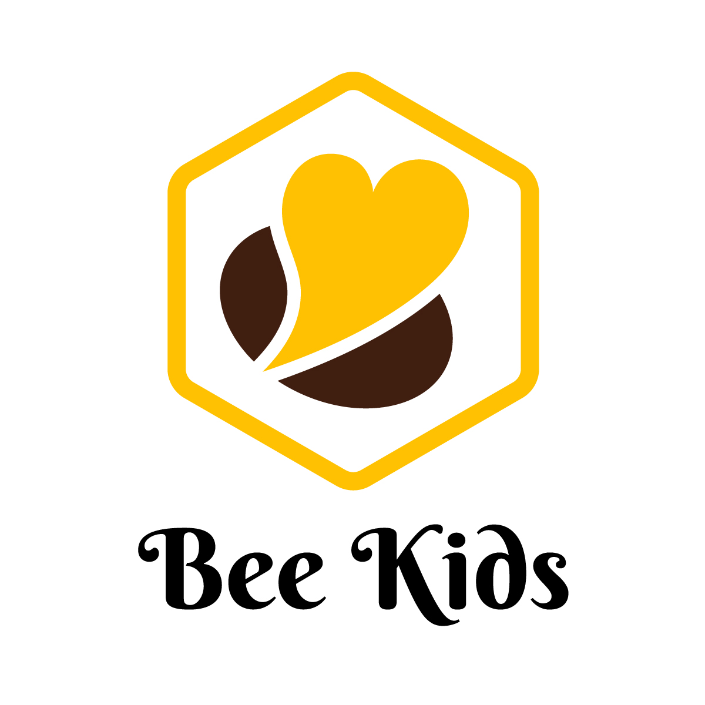

意象與核心
我們的核心價值培養孩子活出教會 6B 核心價值
信靠耶穌Believing in Jesus
歡迎回家Belonging to family
成為領袖Becoming a leader
為敬拜而生Born to worship
帶來盼望Bringing people hope
建造神國Building God’s kingdom
我們的角色
- 你是「教練」，不是「保母」。
- 我們的任務是透過說話、行為、榜樣，來引導、幫助孩子認識神及融入教會生活（認知、態度、能力／知識、情意、技能／知識、品格、技能）。
義工守則-基本出席要求-
- 服事時間
- 每週日 08:30–12:30
- 出席要求
- 每月至少服事 3 次；義工月會一年出席達 80％
- 服事安排
- 每兩個月安排一次，排定後請依規定請假。
完整內容請看義工守則頁面。
Bee Kids 形象設計

期待與孩子一同在天父的花園裡，
享受天父甜甜蜜蜜的愛，
同時像花園裡的蜜蜂辛勤做主工，
在所到之處都留下愛與福音的花粉，
真正活出教會的 6B 價值，
並且真實的 Be Kids。
網站導覽
聯絡與立案資訊
- beekids@truth.org.tw
- 統一編號
- 00970104
- 抬頭
- 財團法人基督教台北真道教會